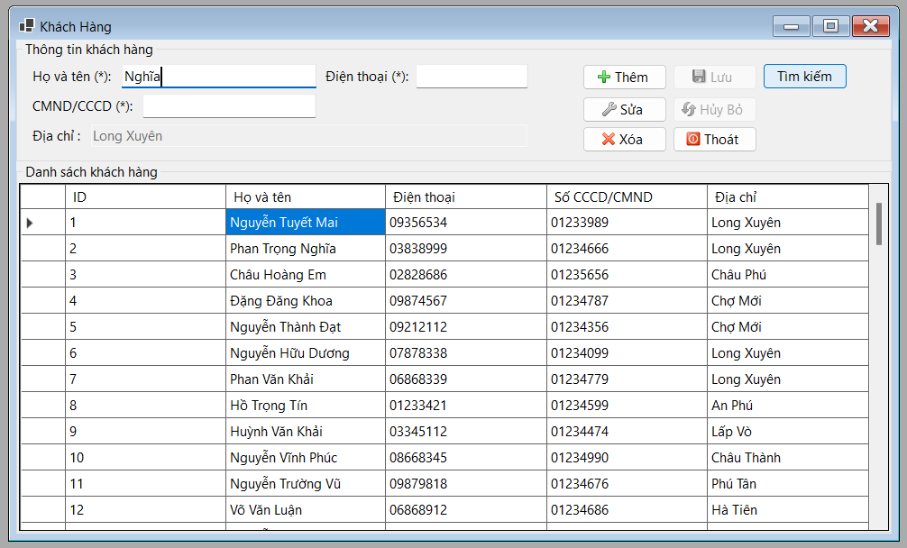

Hướng dẫn sử dụng màn hình Khách hàng.

Thêm
Khi nhấn nút Thêm thì các ô dữ liệu Họ và tên, Điện thoại, CMND/CCCD và Địa chỉ sẽ sáng lên và xóa trắng để người dùng thêm dữ liệu vào.Đồng thời các nút Thêm , nút Sửa và nút Xóa sẽ bị mờ đi. Nếu thêm thành công thì hệ thống sẽ thông báo thêm thành công.
Sửa
Khi nhấn nút Sửa thì các ô dữ liệu Họ và tên, Điện thoại, CMND/CCCD và Địa chỉ sẽ sáng lên để người dùng sửa dữ liệu đã nhập.Đồng thời các nút Thêm , nút Sửa và nút Xóa sẽ bị mờ đi. Nếu Sửa thành công thì hệ thống sẽ thông báo sửa thành công.
Xóa
Khi nhấn nút Xóa thì hệ thống sẽ thông báo rằng người dùng có chắc sẽ xóa khách hàng ở hàng đã chọn hay không?Nếu người dùng chọn Yes thì hệ thống sẽ xóa đi khách hàng đó và không cập nhật ID đó lại .
Ngược lại chọn No thì không thực hiện xóa.
Lưu
Khi nhấn nút Lưu thì hệ thống sẽ nhận lệnh từ nút Thêm hoặc Lưu.Nếu là Thêm thì sẽ lấy dữ liệu ở các ô dữ liệu mà người dùng nhập vào để thêm vào ở sở dữ liệu.
Ngược lại nếu là Lưu thì hệ thống sẽ lấy dữ liệu ở các ô dữ liệu để thay thế vào dữ liệu đã có ở cơ sở dữ liệu theo ID của khách hàng đó.
Hủy bỏ
Khi nhấn nút Hủy Bỏ thì hệ thống sẽ hủy các thao tác đang được thực hiện.
Tìm kiếm
Khi nhấn nút Tìm kiếm thì các ô dữ liệu Họ và tên, Điện thoại, CMND/CCCD sẽ sáng lên và xóa trắng để người dùng có thể nhập thông tin về khách hàng muốn tìm.

Sau đó nhấn nút tìm kiếm lần nữa thì hệ thống cho thấy kết quả tìm kiếm trên màn hình.
Nếu tìm thấy thì thông tin khách hàng tìm được sẽ hiện lên.
Ngược lại thì không cho thấy kết quả.
Thoát
Khi nhấn nút Thoát thì hệ thống sẽ đóng trang